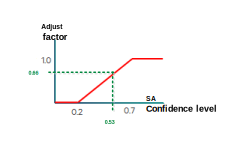
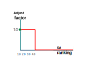
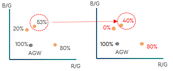
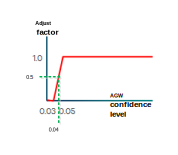
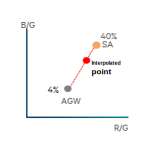
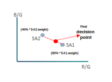

The advanced gray world SA and each generalized SA output their own AWB decision point and corresponding confidence level. The Decision Aggregator (DA) uses this information to merge all SA decision points to compute a final AWB decision and confidence level.

The DA uses a simple and generalized method for merging all decision points to achieve robust performance on accuracy and consistency. To improve accuracy and tuning flexibility, the weight adjustment tuning concept for the merging operation uses three trigger control types: SA confidence value, SA confidence ranking, and AGW SA confidence level. The merging and interpolation process is illustrated below.
|
Confidence level adjustment
| Parameter Categories | Parameter Specifications | Default values {triggers}:: (adjustment factor) |
|---|---|---|
| Weight SA confidence |
Trigger Level = 1 Trigger Control Type = Confidence level Core Data = User-defined adjustment factor |
|
| Weight SA confidence level ranking |
Trigger Level = 1 Trigger Control Type = Ranking of confidence level (highest confidence level = 1, second highest = 2, etc) Core Data = User-defined adjustment factor |
|
| Step 1 | DA evaluates SA
confidence level. Based on sample DA trigger values, a 53% Confidence Level = .66 Adjustment Factor |
 |
| Step 2 | DA evaluates
ranking of SA confidence level. Based on sample DA trigger values, a confidence level Ranking of 1.0 = 1.0 Adjustment Factor |
 |
| Step 3 | DA multiplies the
product of the two adjustment factors to the original SA
confidence level to get the revised confidence level. (Adjustment from 1st Trigger * Adjustment from 2nd Trigger) * original Confidence Level = Adjusted Confidence Level (.66 * 1.0) * 53% = 40% |
 |
Interpolation between AGW decision point and SA decision points
- W_agw = [1.0 - (CF_sa)] * F_adj
- W_sa = 1.0 - W_agw
| Parameter Specifications | Default values [triggers}:: (adjustment factor) |
|---|---|
|
Trigger Level = 1 Trigger Control Type = AGW SA confidence level Core Data = User-defined adjustment factor |
|
| Step 1 | DA evaluates AGW SA
confidence level to get AGW weight adjustment factor. Based on sample DA trigger values, a 4% Confidence Level = .50 Adjustment Factor |
 |
| Step 2 | DA interpolates
between the AGW SA decision point and each SA’s decision point
using a weight formula. Note: This figure only shows one of the
SA points. Same would be done with other SAs. Using the weight formula, the interpolated point is 30% AGW and 70% SA. Interpolation weight for AGW = (100% - 40% SA conf level) * 0.5 SA Weight = 30% Interpolation weight for SA = (100% - 30% AGW weight) |
 |
| Step 3 | Multiply the
adjusted confidence level of the interpolated SA points with the
applicable SA Weight. Use that factor to do a weighted average of all the decision points to get the final decision point. |
 |
All DA triggers follow the common AWB trigger system that provides for interpolation of values that fall outside or between the defined trigger ranges